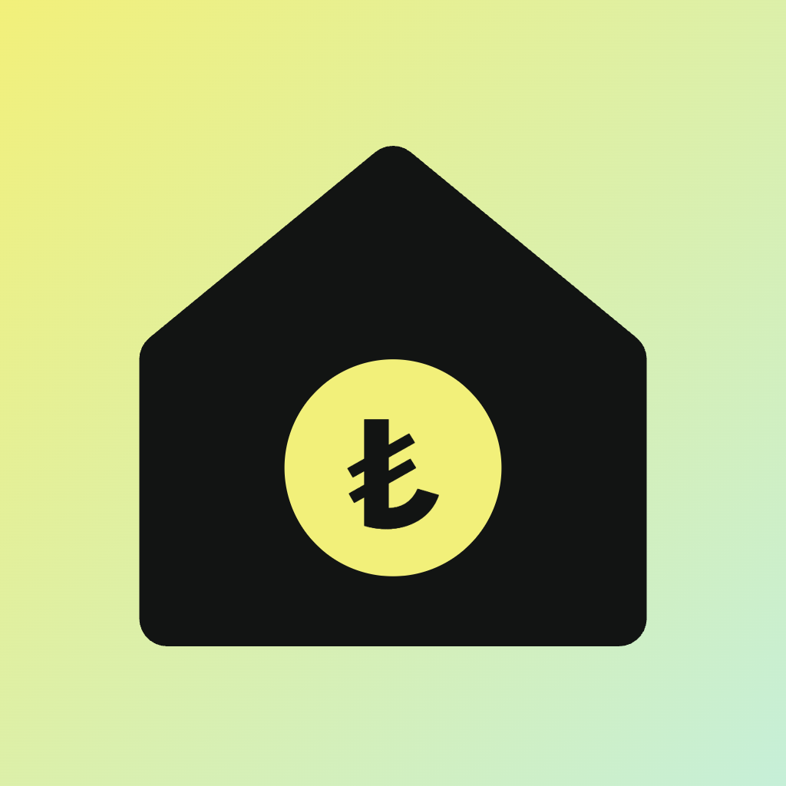

Yardım ve Destek
Aile Bütçem
Harcama nasıl eklenir?
Alttaki + butonuna dokun, kategoriyi seç, tutarı yaz ve Kaydet'e bas. Sık girdiğin harcamalar ana sayfadaki Hızlı ekle bölümünde çıkar; tek dokunuşla tekrar eklenir.
Fatura hatırlatmaları gelmiyor
Profil > Bildirimler'den hatırlatmaları aç ve Test bildirimi gönder'e dokun. Bildirim gelmezse cihazının Ayarlar > Bildirimler bölümünden Aile Bütçem'e izin ver.
Verilerim nerede?
Bütün veriler yalnızca cihazında saklanır. Hesap yoktur; uygulamayı silersen veriler de silinir. Ayrıntılar için gizlilik politikasına bak.
Tüm verileri nasıl silerim?
Profil > Veriler > Tüm verileri sıfırla.
Bize ulaş
Soru, öneri ya da hata bildirimi için: cangursoy4155@gmail.com. Genellikle 2 iş günü içinde yanıt veririz.